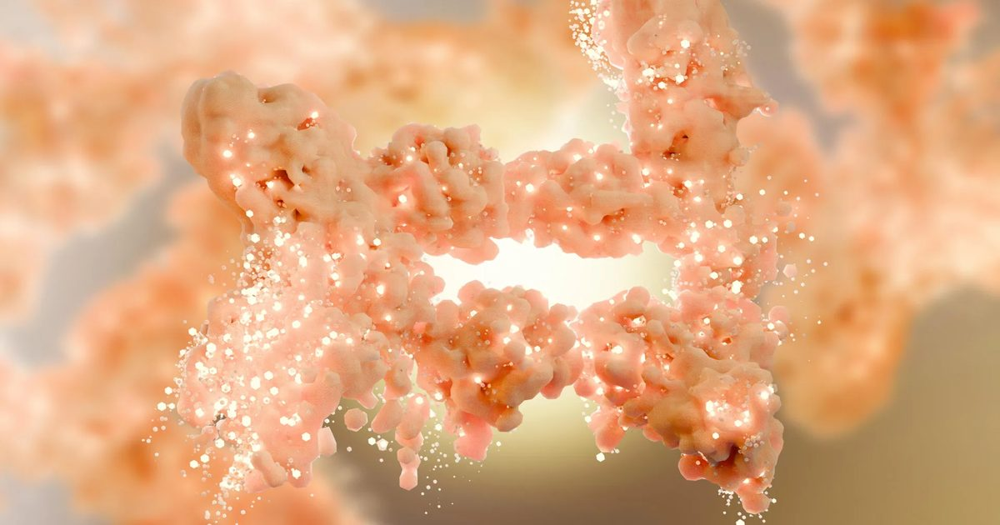

Ученые обнаружили скрытый переключатель, который сжигает жир и блокирует новые жировые клетки
Ученые обнаружили, что отключение белка под названием Mitch заставляет клетки человека сжигать больше жира и предотвращает развитие новых жировых клеток.
Прорыв основан на экспериментах на мышах, которые показали замечательную устойчивость к ожирению и улучшенную мышечную выносливость, что дает надежду на новый подход к лечению потери веса.